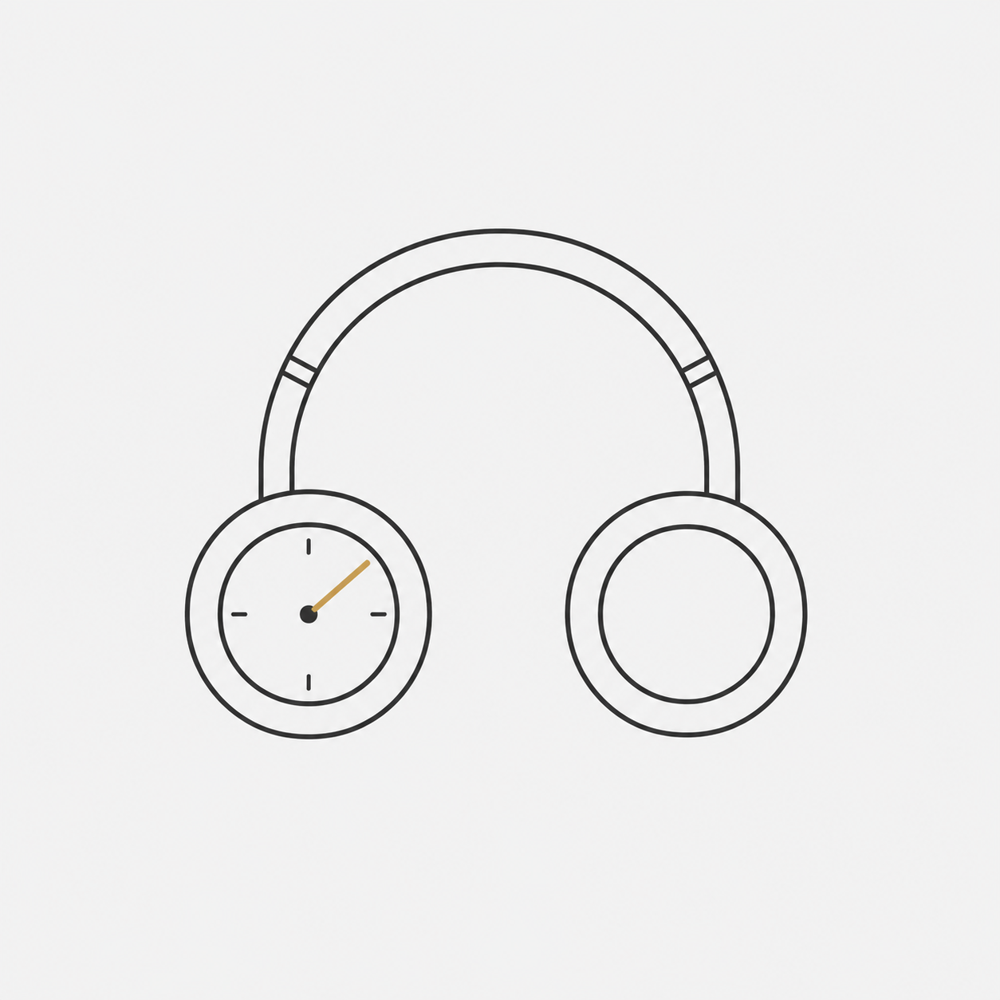

その日の気分を選ぶだけで、BGM が流れるポモドーロタイマー。
アプリについて
Moodoro は、集中したい時にすぐ使えるシンプルなポモドーロタイマーです。25 分の集中と 5 分の休憩を 1 セットとして、リズムよく作業を進められます。タイマーに合わせて Calm・Rain・Cafe・Deep Focus・Night の 5 つの環境音 BGM から選んで流せるので、机に向かう前のひと押しのつもりでお使いください。
主な機能
- ポモドーロタイマー（25 分集中 + 5 分休憩・カスタマイズ可能）
- 5 種類の環境音 BGM（Calm / Rain / Cafe / Deep Focus / Night）
- 選択中の MOOD に連動したカラーテーマ
- BGM はクロスフェード再生（途切れずに次の楽曲へ）
- バックグラウンドでも BGM が継続再生（他アプリ使用中・スリープ中も OK）
- タイマー終了時のローカル通知
- 音量スライダーでお好みに調整
- 個人情報の収集なし・完全ローカル動作
こんな方におすすめ
- 集中時間を区切って作業したい方
- 環境音 BGM があると集中できる方
- シンプルで雑音のないアプリを探している方
- 個人情報を気にせず使えるアプリを探している方
ダウンロード
対応: iOS 15 以降 / 価格: 無料
サポート
Moodoro のご利用中にお困りのことがありましたら、以下の窓口までお問い合わせください。
お問い合わせ窓口
- メール: support@upthemoon.co.jp
- お問い合わせフォーム: フォームはこちら
よくあるご質問
Q. BGM が途中で止まってしまいます。
iOS の「設定」アプリ →「Moodoro」を開き、「バックグラウンド App の更新」が ON になっているかご確認ください。また、iOS のバッテリーセーバーが ON になっていると BGM が停止することがあります。
Q. タイマー終了時の通知が来ません。
iOS の「設定」アプリ →「通知」→「Moodoro」で通知許可が ON になっているかご確認ください。
Q. データの取り扱いはどうなっていますか？
Moodoro は 個人情報を一切収集しません。すべての設定情報は端末内にのみ保存され、外部に送信されることはありません。詳しくは プライバシーポリシー をご確認ください。
Q. 他の OS（Android / Mac）には対応していますか？
2026 年 6 月現在、Moodoro は iOS 専用アプリとして公開しています。Android 版は準備中です。
関連情報
Up the Moon合同会社
最終更新: 2026年6月9日